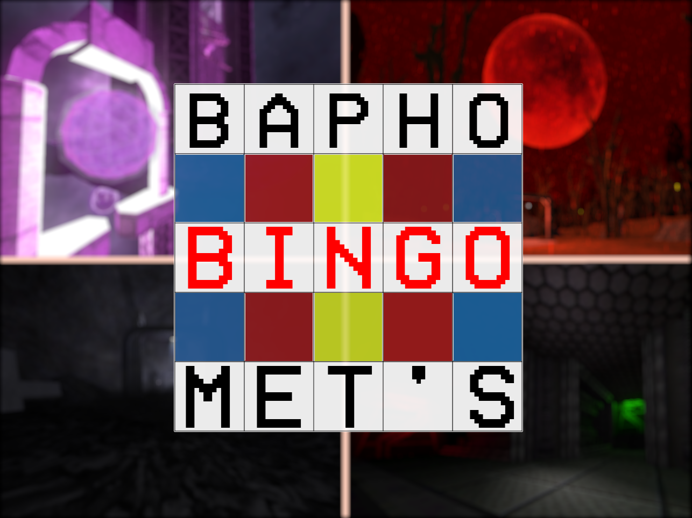

Baphomet's Bingo is a game modification for "ULTRAKILL" that adds an async multiplayer bingo gamemode that can be played with friends and rivals.
Initially inspired by a functionally similar mod for TrackMania, Baphomet's Bingo tasks groups of players to claim levels on a bingo grid by finishing in the fastest time possible, with the first time to claim a full row, column or diagonal winning the game.
Baphomet's Bingo features support for not only ULTRAKILL's official campaign maps, but also maps taken from the Angry Level Loader's catalog, the former of which is a custom level loader for ULTRAKILL. More than 80 custom maps, graciously made by a wide variety of community mappers, programmers and artists, were included at launch in various map pools, with more being added over time.
The bingo game client was written in C# and patched into the game via the BepInEx, a universal mod loader for Unity Mono-based games, and the server was built in native PHP.